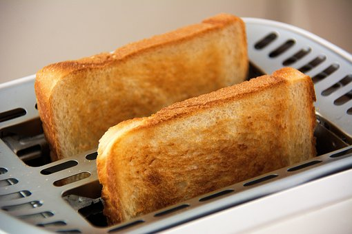

Toast

Ingredients
- 4 Slices of Bread of your prefence
- Ground Cinnamon.
- All Natural Pure Vanilla Extract
- 1 egg
- 1/4 cup of whole milk
- pancake syrup
- (Optional) Fresh fruit (own pref)
Tools
- nonstick griddle or skillet
- mixing bowl
- a set of measuring cups and spoons
- wire whisk
Steps
- Beat egg, vanilla and cinnamon in shallow dish with wire whisk. Stir in milk.
- Dip bread in egg mixture, turning to coat both sides evenly.
- Cook bread slices on lightly greased nonstick griddle or skillet on medium heat until browned on both sides.
- Add 1 teaspoon Pure Vanilla Extract and 1/4 teaspoon Ground Cinnamon to 1 cup pancake syrup; stir well to mix. Serve warm, if desired.